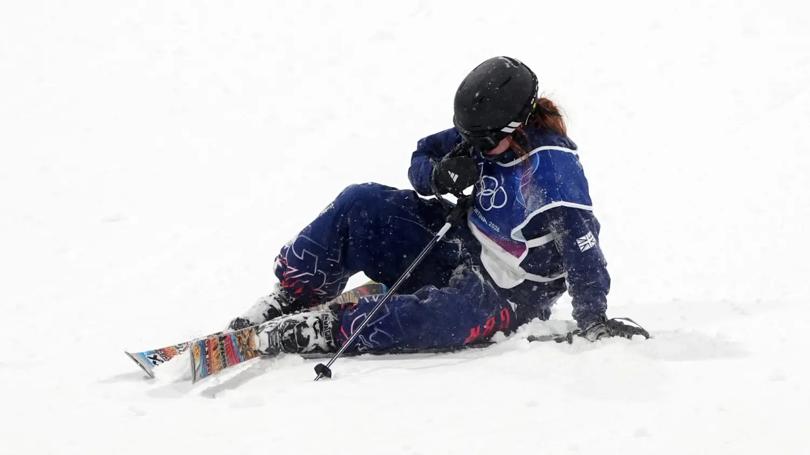
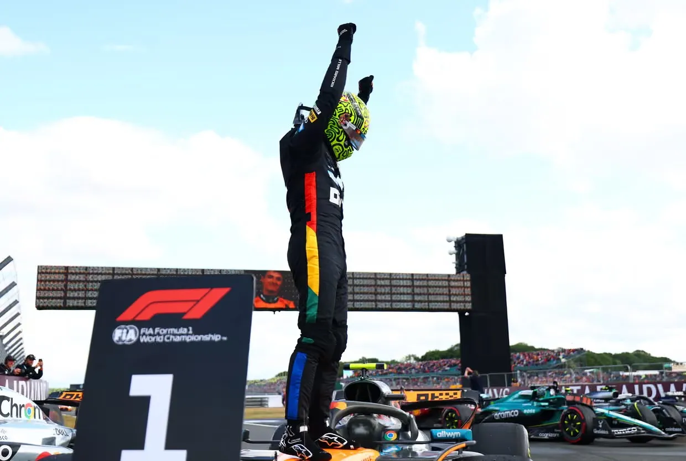
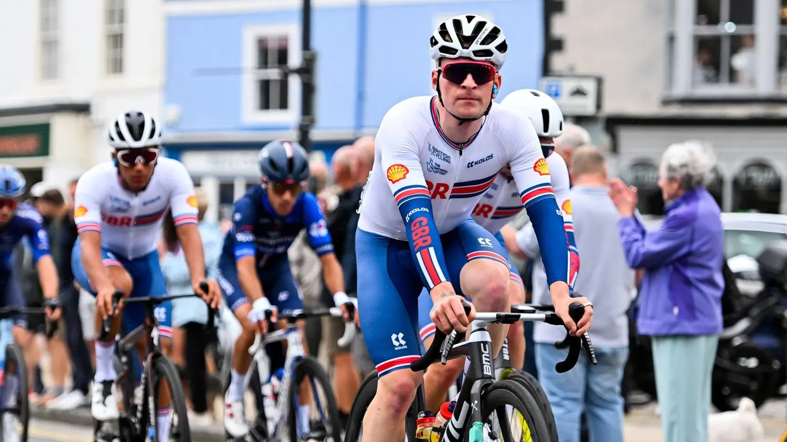

Kirsty Muir came agonisingly close to a first Winter Olympic medal for Great Britain once more, finishing fourth in the women’s big air event at the Milan Cortina 2026 Games. The 21-year-old Scot ended with a combined score of 174.75 from her two best jumps, falling just 3.5 points short of bronze medallist Flora Tabanelli of Italy.
The result mirrored Muir’s slopestyle performance exactly one week earlier, where she missed bronze by a razor-thin 0.41 points. Despite the disappointment, the young athlete showed remarkable courage and ambition throughout the competition at Livigno Snow Park.
“I’m genuinely proud of myself,” Muir told BBC Sport after the final. “I landed the two tricks I needed in the first two runs, and I went for something completely new on the third because I’ve never stuck that one before. Yes, I crashed, but I’m still proud I had the guts to try it.”
The final itself was delayed by over an hour due to a sudden heavy blizzard that swept across the venue, reducing visibility and complicating conditions. Adding to the uncertainty, two Swiss skiers — including pre-event favourite Mathilde Gremaud — withdrew at the last minute because of injury. That appeared to open the door slightly for Muir, who had qualified fourth for the three-run final.
Yet the opening round produced a barrage of high scores. Four athletes posted 90 points or higher, leaving Muir in seventh place and facing a must-improve situation. She responded emphatically in run two, throwing down a clean 1620 — four-and-a-half rotations with a solid grab — scoring 93.00, the highest mark of that round. The jump lifted her straight into silver-medal position temporarily.
At that stage, China’s Eileen Gu — the defending Olympic champion in three freestyle disciplines from Beijing 2022 — looked vulnerable. Gu, competing in big air for the first time since her triple-gold haul four years ago, had struggled in her second attempt and sat well down the order. But the 22-year-old superstar, ranked as the world’s fourth-highest-paid female athlete, delivered under pressure on her final jump to reclaim a podium spot and push Muir down to third.
Gu’s celebration after that third run suggested she believed silver was secure, even though several strong contenders still had their final attempts ahead. In the end, Italy’s Flora Tabanelli stole the show with the night’s biggest score — 94.25 — on her closing jump. That effort secured bronze and nudged Muir out of the medals once again.
Knowing exactly what was required, Muir took her time at the top of the big-air ramp for her final attempt. After a long discussion with her coach about possible options, she opted for another 1620 variation with a different grab. Sadly, she couldn’t hold the landing, sliding out and ending the competition in fourth.
Sitting on the snow afterwards, visibly processing the outcome, Muir later reflected: “When I saw the other girls’ scores coming in, I knew I needed something massive to get on the podium. I’m really happy I went for it. That’s what I came here to do — push my limits.”
Canada’s Megan Oldham claimed the gold medal with a dominant performance across all three runs, while Eileen Gu took silver in her return to big air competition. The result leaves Muir with two heartbreaking fourth-place finishes at these Games, underlining both her talent and the razor-thin margins at the elite level of freestyle skiing.
Despite the near-misses, the 21-year-old — competing in her second Olympics — has shown maturity beyond her years. Her willingness to attempt new, high-difficulty tricks under intense pressure has earned widespread praise from coaches, teammates and fans alike.
As the Milan Cortina Games continue, British supporters will hope Muir’s persistence pays off in any remaining events or in future competitions. For now, though, the memory of two agonisingly close calls will linger — a testament to how fine the line is between glory and heartbreak at the very top of winter sport.
Muir’s performances have already inspired a new generation of British freestyle hopefuls, and her courage in going for broke on that final jump may prove more valuable in the long run than any medal could have been on the day.
Sports


